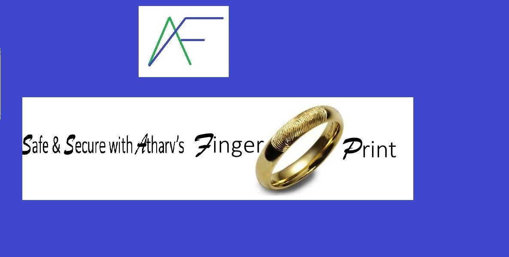

Atharv's

Atharv's
Vision :To make possible ‘Breathe Safety’ anytime & every time
Mission :To deliver easily accessible & affordable ‘Be Safe Always’ products

Safety isn’t expensive; it is priceless & safety doesn’t happen by accident. In tune with our vision-to make possible ’breathe safety’ anytime and every time, my company has devised many a safety app that ensures that people can protect themselves from danger.
One of the apps is ‘Signo-Safe’. This can be loaded on any ornament worn on the human body- a ring, a locket, a watch and so on. The person can trigger safety signals by a light unobtrusive touch on the app when in danger. The light touch triggers signals via geo-tracking/ GPS to the nearby six police stations and continuously monitors the rescue mission until the ‘person safe’ alert is given by the police. It allows other police stations to track the rescue mission and send additional help if required.
This concept evolved in the wake of many rapes and murders where the people do not have the time to make a call or alert the police.
Today, the pandemic has forced us to delve into other options. We are linking this to the ‘Aragya Sethu’ app and a person who wears this app and comes into contact with a Covid positive person, it beeps with a red light continuously and with an ‘at risk’ person, it beeps with a blue light.
We are also contemplating triggering alarms within a 1KM radius of a wild animals. We are also checking to see if it could help the army/air force/ naval base.
Be safe always-Safe & Secure with Atharv’s